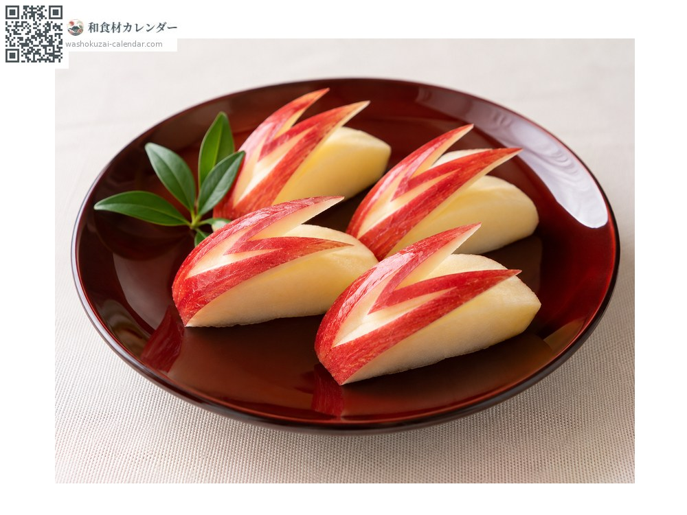
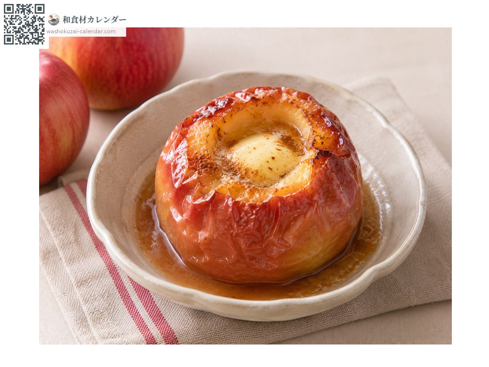
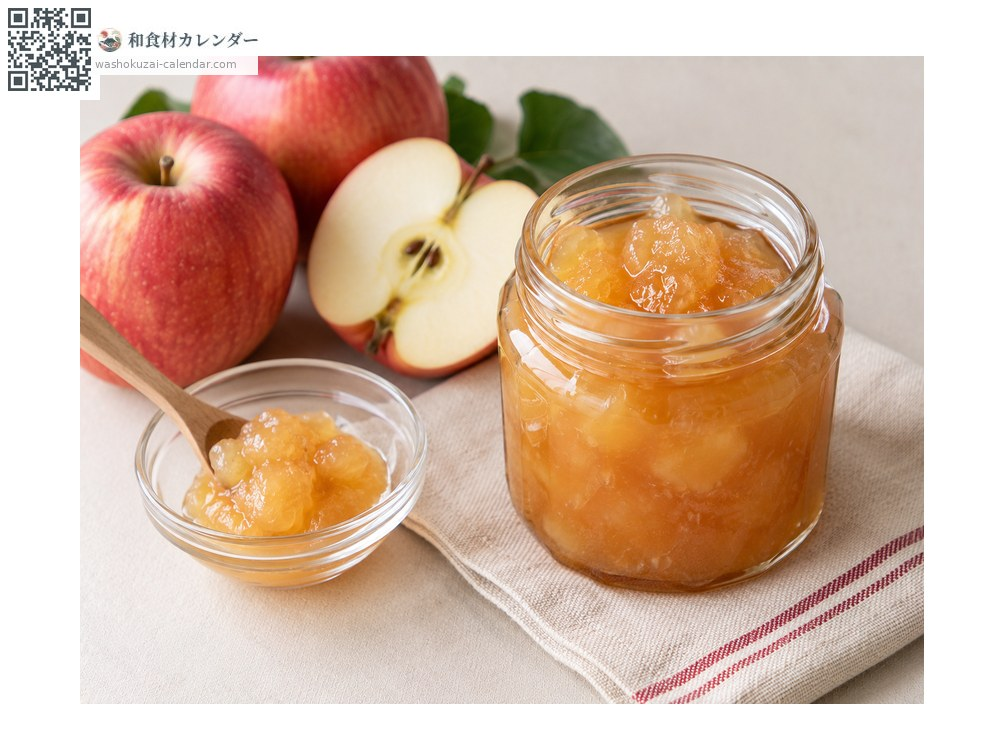
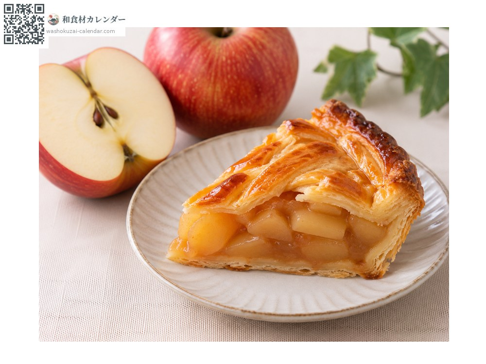

ผลไม้
แอปเปิล
リンゴ りんご ringo
ชื่ออื่นringo
อร่อยที่สุดในเดือน ต.ค., พ.ย., ธ.ค.

ช่วงที่อร่อยที่สุด
ม.ค.
ก.พ.
มี.ค.
เม.ย.
พ.ค.
มิ.ย.
ก.ค.
ส.ค.
ก.ย.
ต.ค.
พ.ย.
ธ.ค.
ช่วงอร่อยที่สุดมีจำหน่าย
วิธีปรุง

ทานสด
กินทั้งเปลือกจะได้สัมผัสที่ดี

แอปเปิลอบเนยน้ำตาล
อบกับเนยและน้ำตาล

แยม
เคี่ยวแล้วเติมมะนาว

แอปเปิลพาย
พอโดนความร้อนกลิ่นจะหอมขึ้น
วิธีเลือก
สีเข้มสม่ำเสมอและยกแล้วรู้สึกหนัก ด้านก้นออกเหลืองแปลว่าสุกเต็มที่
วิธีเก็บรักษา
ใส่ถุงแล้วแช่เย็น ปล่อยแก๊สเอทิลีนจึงควรแยกเก็บจากผักอื่น
แหล่งผลิตหลัก
เกร็ดน่ารู้
ความเหนียวเยิ้มบนผิวเรียกว่า อาบุระอางาริ เป็นสัญญาณว่าสุกเต็มที่ ไม่ใช่แว็กซ์แต่เป็นปรากฏการณ์ธรรมชาติ